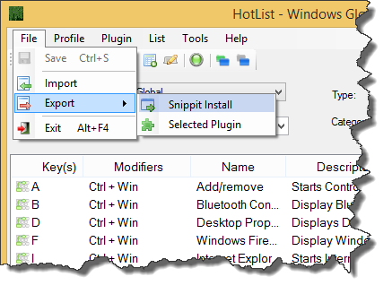
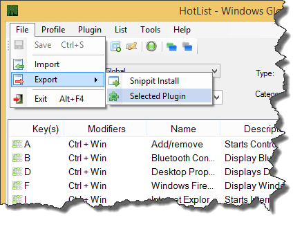

Hotlist can export a AutoHotkey Snippit File (a profile with all the current plugins) or Hotlist can export individual plugins.
To Export a AutoHotkey Snippit File Just go to the File / Export / Snippit Install as shown in figure 1.
To Export a single Plugin select the plugin for export in the Hotlist Plugin drop down list. Go to the File / Export / Selected Plugin as shown in figure 2.


Exported files will contain all code contained within the plugin and/or profile except for code that is added in include plugins using the AutoHotKey #include directive. See Include File for more information on #include.